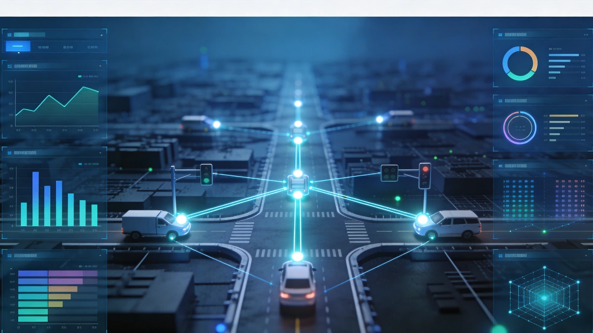
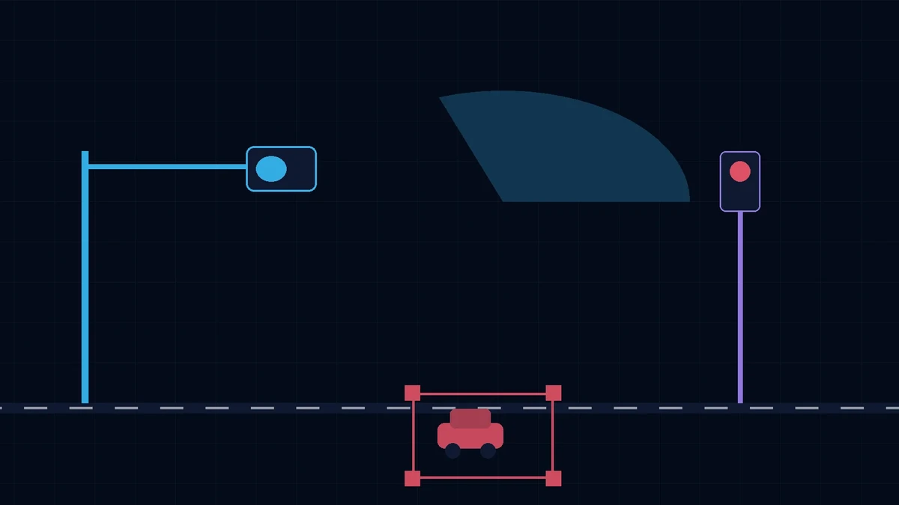

Architecture de la Solution
Technical Foundation: Microservices-based intelligent traffic management platform compatible with multi-brand signal controllers.
[Flow] Detector data collection → edge computing optimization → congestion info to guidance screens and navigation platforms → violation upload to penalty platform → central analysis and reporting.
[Road Section] Guidance screens along main roads publish real-time traffic information; bus priority detectors extend green light when buses approach.
[Intersection] Video detectors, radar detectors, signal controllers, and AI edge boxes at each intersection; electronic police capture red-light running, speeding, and violations.
[Traffic Control Center] Located at the traffic police command center, traffic engineers remotely monitor and adjust intersection flows, signal status, and congestion indices.
This solution adopts a three-tier "Intersection Perception-Regional Coordination-Central Control" architecture for real-time traffic monitoring and signal optimization.
Composition de la Solution
Scénarios d'Application

Optimisation feux aux intersections
Timing adaptatif basé sur le flux de trafic en temps réel pour réduire le temps d'attente des véhicules.

Coordination onde verte artérielle
Contrôle coordonné des feux sur les intersections adjacentes pour permettre un passage fluide sur les axes principaux.

Dispersion régionale du trafic
Contrôle d'équilibrage du trafic régional aux heures de pointe pour empêcher la propagation des embouteillages locaux.

Capture intelligente d'infractions
Reconnaissance automatique et collecte de preuves pour le feu rouge, l'excès de vitesse et le sens inter.
Avantages de la Solution
Le système est compatible avec plusieurs marques leaders de contrôleurs de feux nationaux et internationaux, protégeant les investissements existants. La technologie d'analyse vidéo IA élimine le besoin d'installation destructive de boucles dans la chaussée, avec des cycles de construction courts et des coûts de maintenance faibles. Les interfaces de données ouvertes supportent l'intégration avec les centres de commande de trafic urbains et les fournisseurs de services de cartographie.
Valeur de la Solution
Amélioration de la capacité des routes, réduction des accidents de trafic, optimisation des services de transport en commun, et fourniture d'un support de données et de base pour la prise de décision en gestion du trafic urbain.
Pratique Projet
AXLTeco a participé à la construction des systèmes basse tension et intelligents pour les infrastructures de transport incluant le Mile 2 Integrated Transport Hub de Lagos, la Lagos Light Rail Blue Line Phase 5 et la gare de Kano, accumulant une expérience de mise en œuvre dans le secteur des transports.